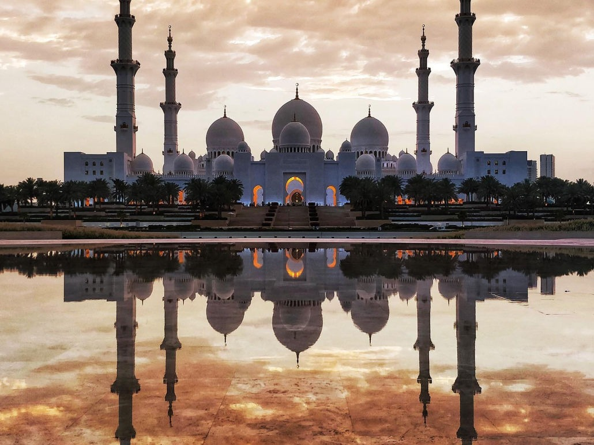
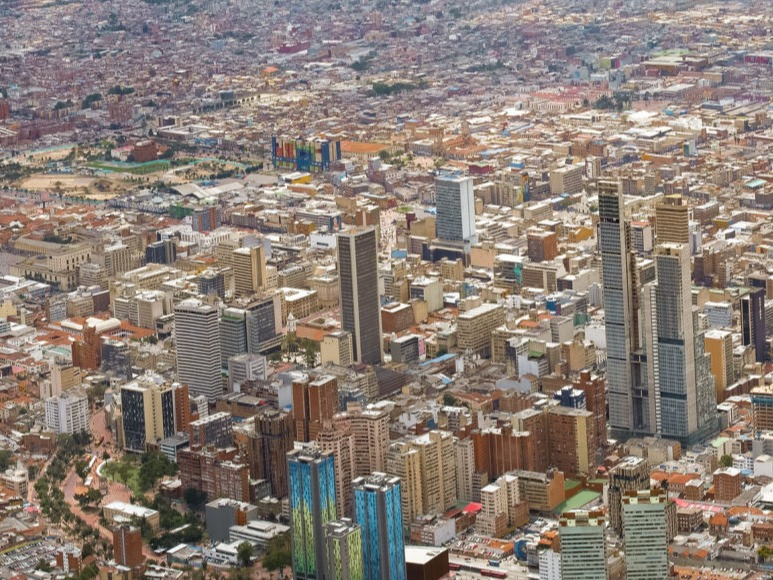
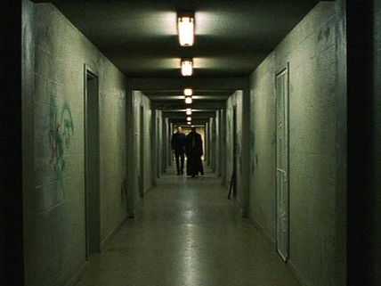
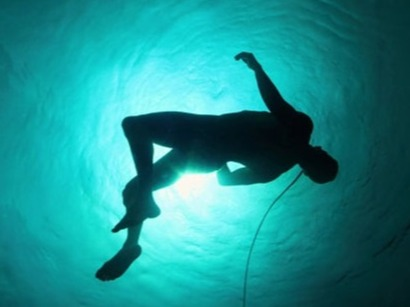
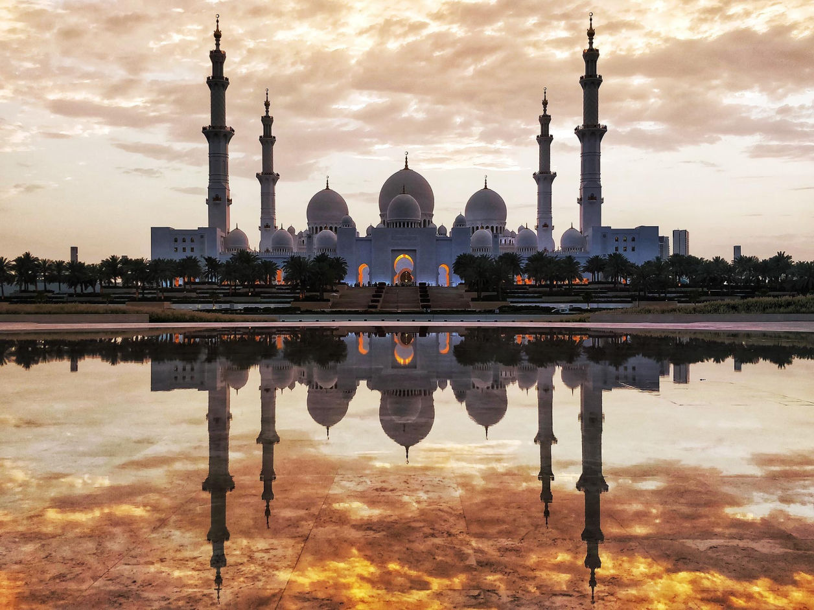
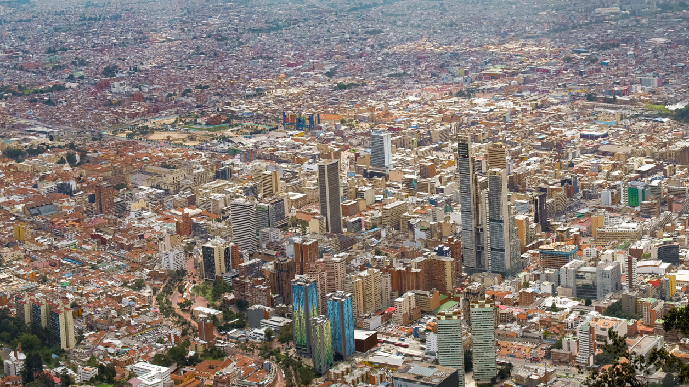
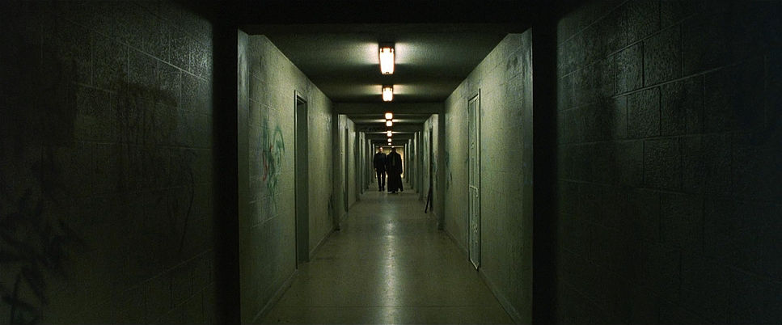

By:ShotDeck
构图的例子:Low Angle
画面来自电影Altered Carbon。画面从水下向上拍摄人物，人物呈现剪影状态，位于画面中心，被上方强烈的光源包围，形成明显的明暗对比与视觉焦点。同时人物处于漂浮状态，增强了空间感与失重感。





By:Google Image
图中的主体是 Sheikh Zayed Grand Mosque。整座建筑以画面中央为轴线，左右两侧的塔楼、穹顶、树木以及建筑结构几乎完全对称，形成强烈的平衡感与秩序感。前景的水面倒影再次强化了这种对称效果，使画面看起来更加稳定、庄严和宏伟。

By:Google Image
图中展示的是 Bogotá 的城市景观，从高空俯视整个城市。画面中密集的建筑、街道和高楼从上往下展开，让观者可以一眼看到城市整体的布局与规模。

By:ShotDeck
画面来自电影 The Matrix。在这段走廊场景中，地面的线条、墙壁和天花板的灯光形成明显的直线，并向画面中心延伸，把观众的视线自然地引导到远处的人物身上，例如主角 Neo。
By:ShotDeck
画面来自电影Altered Carbon。画面从水下向上拍摄人物，人物呈现剪影状态，位于画面中心，被上方强烈的光源包围，形成明显的明暗对比与视觉焦点。同时人物处于漂浮状态，增强了空间感与失重感。

Designed with Mobirise
Website Maker